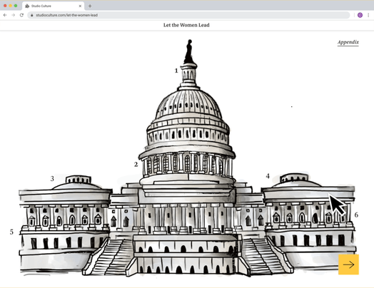
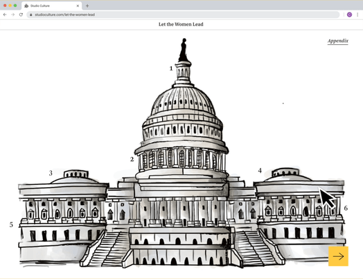
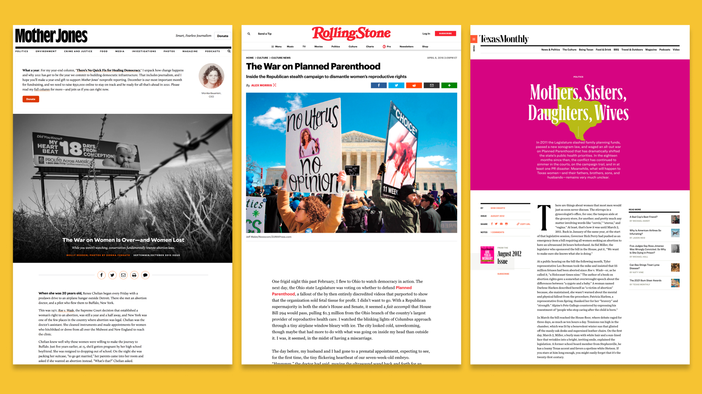
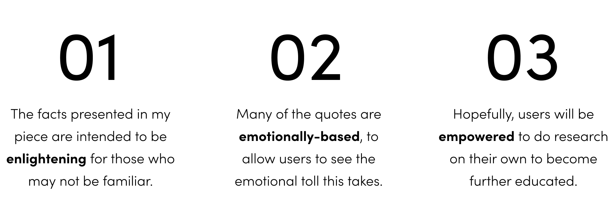
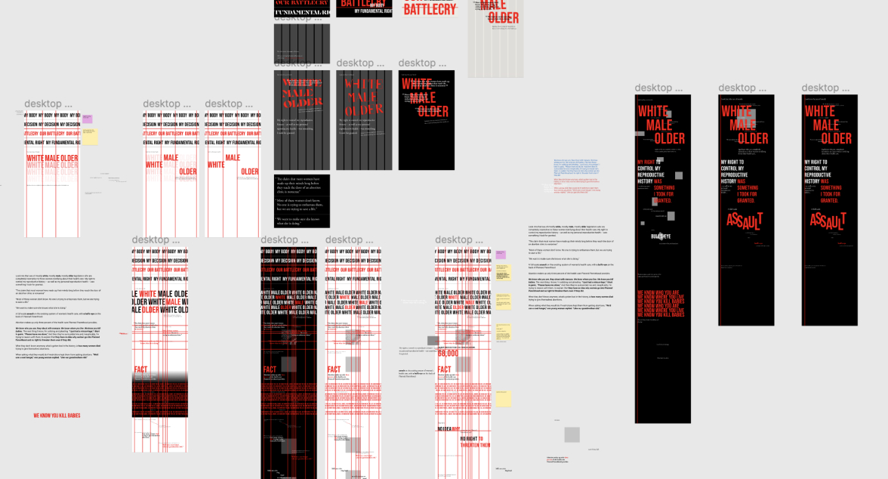
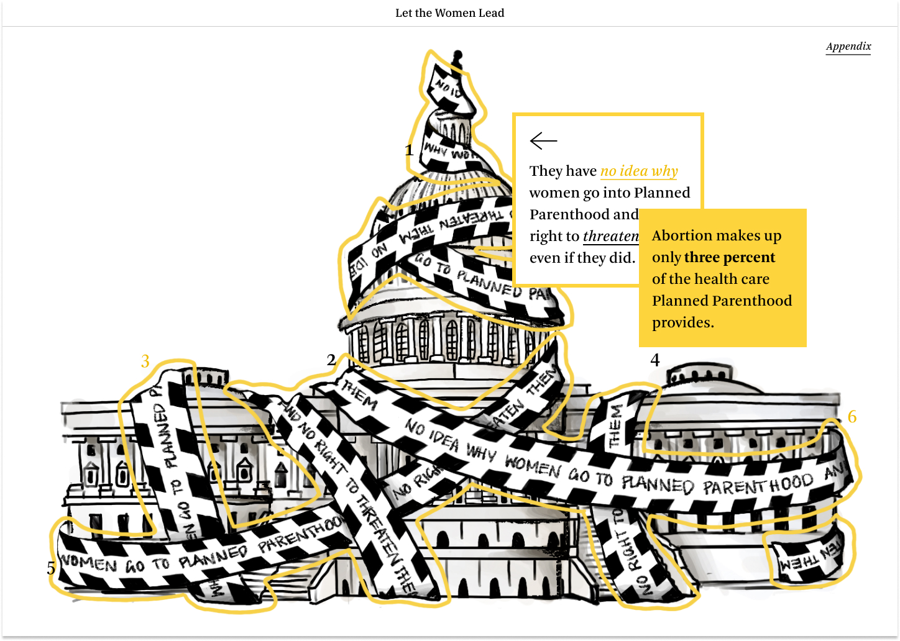
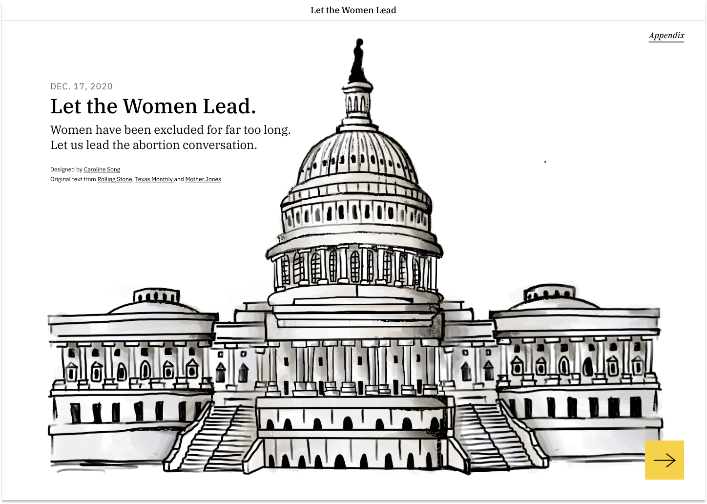

caroline song :-)
communications designer @ carnegie mellon
Fall 2020, 3 weeks
The threat of limiting/illegalizing resources regarding reproductive rights has not gone away, but has only gotten stronger during these past years. All women should have the right to make decisions regarding their own body, and for that to happen, women must be the ones to lead the conversation in the political field.
In response to this issue, I created a digital narrative emphasizing the principle of typography and its relationship with visual imagery.
Figma
Adobe AfterEffects
UI Design
Interaction Design
Typography
Illustration
Individual
Interactive Narrative –
There are 6 of the same type of interaction. This is a testament to how much information can be packed onto one screen, without any scroll features. My narrative allows the typography to be unveiled through many layers in a single screen. They allow the user to learn factual information that either supports or contradicts the primary text. Some layers are for the user to simply dive deeper into a specific storyline.
I created illustrations that derive from the political cartoon feeling to support what is being said in the text. Starting off with a seemingly normal looking Capitol Building, users will find that as you interact with the piece, all is not what it seems. Darker themes start to emerge, which also parallel what is being stated in the text blocks associated with those images.


Examples of Key Interactions
For those who wish to take a shortcut in order to read all the text, rather then interacting with the imagery, users can click on the ‘Appendix’ to view all the text through one simple scroll.
After a while, a yellow button will appear at the bottom of the screen. When users click, it will take them to a final page with a final CTA. After giving users the facts and information about the skewed system women have to navigate with + fight for their rights in, the experience states that "it's time to let the women lead the conversation".
 

Appendix and End Interaction
01 The Issue –
The overwhelming majority of those who sit on the seats of Congress are white, older males. And as a result, when it comes to decisions made about women and their bodies, women’s voices are often drowned out, their stories being lost amongst the sea of male politicians with different agendas.
Of course, not all men are fighting to decrease women’s access to healthcare, and those who are, also include other women. But the statement remains:
Every person deserves to make their own decisions about their own body. Anything less should be considered a violation of our fundamental rights.
02 Sourcing Text –
Researching and sourcing ~250 words from articles like Rolling Stone, Texas_Monthly, as well as Mother Jones, I put together a typographic piece that sends my message clearly to the audience. Please read these articles! Enlightening and powerful, I found them a great insight into different women's struggles throughout the years over the fight to make decisions about their own body.
I created a quick flow showing my intended journey for the user, the process of the during and after they interact with my experience.

03 Visual System Iterations –
Starting off with a red and black interaction, I found this approach to be too aggressive. I did not want information to be screaming at the users. I took a step back to allow the text to speak for itself plainly, in a calm, yet powerful manner.

I moved away from that style and into a more subtle, less expected version of my typographic piece, using yellow as an accent color. Yellow is one of the colors that is associated with the suffrage movement in certain areas, and I found it fitting for the meaning in my piece.
This is a summary of my visual system. Colors and text are kept minimal and readable. I chose to use large mouse icons to match the cartoon style of my piece, and so that users will clearly be able to tell when they are being signaled to click or hover.
04 Visual Decisions –
1. Why Typographic Layers?
For my final visual style, I chose to reveal information and images in layers to metaphorically represent the need for us to not take information at face value. As we look at those in Congress, sometimes what various politicians will say will be factually correct. But other times, they will not. And it is up to us not to be tricked by incorrect information, but to do our own research in order to tackle this fight for reproductive rights with both strength and conviction.

2. Why did I Choose to Portray this Topic through Interactive Political Cartoons?
Focus on the Facts: I wanted to diffuse the tension and emotions this subject tends to invoke in people. I present the facts in a straightforward, non-distracted manner, in a style that every person is familiar with.
Satire: The understanding of what this style is associated with is basically universal: satire, especially regarding politics. And that's what my typographic piece is all about, satirically breaking apart the Capitol Building to show the misogynistic inside workings.

Final Thoughts –
One of the foundations of any good communication design piece is typography. The focus during this project was learning how to translate and treat type in the digital space, as opposed to the physical. What are the affordances that come out of digital interactions? What are the limitations? These are all questions that I kept in mind throughout my process, and is what I believe made my design stronger in the end.
I went through so many emotions while making this piece. Anger, sorrow, confusion, indignance. Though I only had 3 weeks to bring this to life, this is a topic that, as a woman, affects me and is so meaningful, and wanted to do it justice. This affects so many others around the world, and the fight for reproductive rights is one that I will always support.